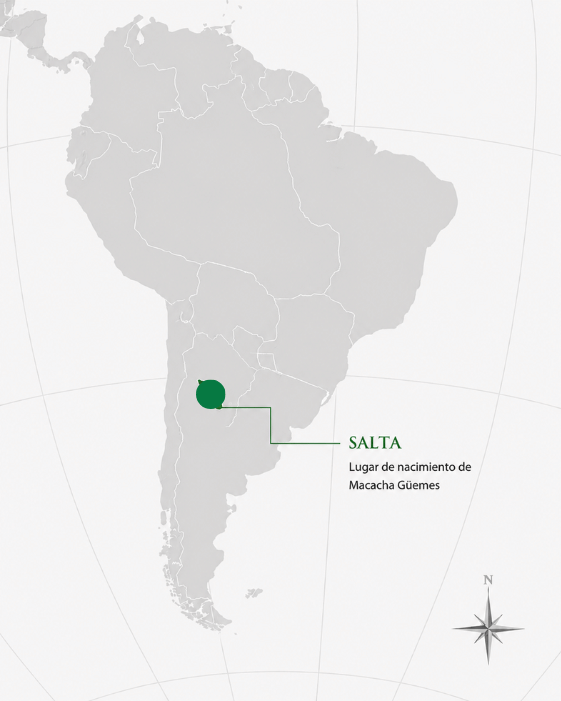

Macacha Güemes
Salta, 4 de abril de 1787 – Salta, 19 de mayo de 1866
Dirigente política salteña y colaboradora fundamental de su hermano, Martín Miguel de Güemes, en la defensa del norte argentino.
← Volver a Heroínas
Presentación
María Magdalena Dámasa Güemes, conocida como Macacha Güemes, nació en Salta en 1787. Actuó principalmente en esa provincia durante las guerras gauchas, el ciclo de campañas que, entre 1814 y 1821, defendió el norte de las Provincias Unidas de los intentos de reconquista realista provenientes del Alto Perú. Fue una dirigente política fundamental y una colaboradora cercana de su hermano, Martín Miguel de Güemes, para quien organizó redes de información, comunicación y apoyo logístico. Es importante dentro de la historia de la independencia argentina porque su trabajo político y organizativo fue tan decisivo como la acción militar del ejército gaucho, y porque encarna el liderazgo femenino en la defensa directa del territorio argentino.

Logros destacados
Redes de información
Organizó redes de información y espionaje fundamentales para la defensa de Salta.
Paz de los Cerrillos
Participó en las negociaciones que llevaron a la Paz de los Cerrillos, en 1821.
Figura política de Salta
Fue una figura política fundamental en la provincia, incluso después de la muerte de su hermano.
Sostén del ejército gaucho
Sostuvo la organización logística del ejército gaucho y contribuyó a la defensa del norte argentino.
Su aporte a la independencia argentina y sudamericana
Las luchas independentistas de América del Sur estuvieron conectadas entre sí. Aunque algunas de estas mujeres no actuaron directamente en el actual territorio argentino, sus acciones contribuyeron a debilitar el dominio español y a fortalecer la emancipación del continente. De esta manera, también favorecieron, directa o indirectamente, la consolidación de la independencia argentina.
Aporte directo- Participó en la defensa de Salta y del norte de las Provincias Unidas.
- Organizó redes de información y comunicación.
- Colaboró con el ejército gaucho dirigido por Martín Miguel de Güemes.
- Su participación política y logística ayudó a frenar las invasiones realistas.
- Su aporte a la independencia argentina fue directo.
Ideas
Los principios que guiaron su liderazgo político:
- Defendió la independencia y la autonomía del territorio.
- Consideraba fundamental la organización de la población para enfrentar a las fuerzas realistas.
- Creía en la negociación política y en la unidad entre los sectores patriotas.
Acciones
Lo que hizo, concretamente, en el terreno político y logístico:
- Organizó redes de información y espionaje.
- Colaboró en la comunicación entre las tropas y la población.
- Ayudó en la organización logística del ejército gaucho.
- Participó en negociaciones políticas.
- Tuvo un papel importante en la Paz de los Cerrillos.
Legado
Cómo es recordada y por qué continúa siendo una figura fundamental:
- Es reconocida como una de las principales figuras políticas femeninas del norte argentino.
- Su trabajo fue esencial para la defensa de Salta y del territorio nacional.
- Representa la capacidad de liderazgo, negociación y organización de las mujeres.
Línea de tiempo de Macacha Güemes
-
1787
Nacimiento. Nace en Salta.
-
1814-1821
Guerras gauchas. Organiza redes de información y apoyo logístico para el ejército liderado por su hermano.
-
1821
Paz de los Cerrillos. Participa en las negociaciones que ponen fin a los enfrentamientos en la región.
-
1821
Tras la muerte de su hermano. Continúa siendo una referencia política en Salta.
-
1866
Muerte. Fallece en Salta, reconocida como una figura política clave del norte argentino.
Su inteligencia política fue tan importante como la acción militar de los ejércitos patriotas.